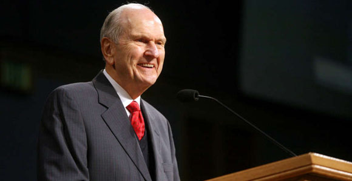
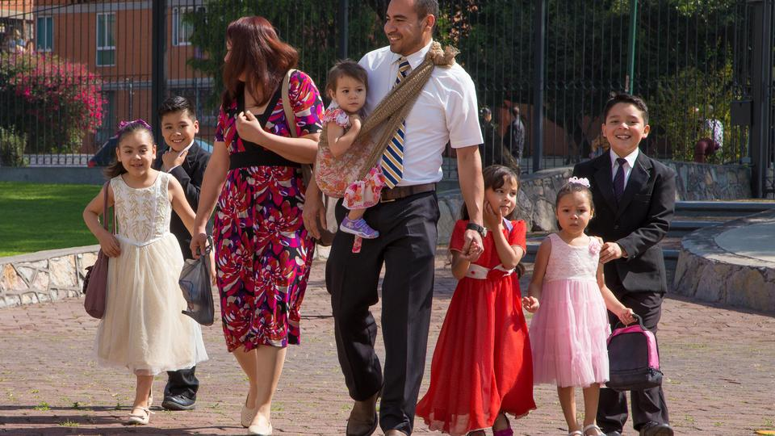

Promesa Profética
Rusell M. Nelson
Nosotros los miembros de La Iglesia de Jesucristo de los Santos de los Último dias,
sostenemos a Rusell Marion Nelson como profeta, vidente y revelador y lo reconocemos
como la persona que Jesucristo llamo para guiarnos.

Uno de sus consejos fue:
"Esta es mi promesa para ustedes: todo aquel que busque con sinceridad a Jesucristo
lo hallará en el templo. Sentirán Su misericordia, encontrarán respuestas a
sus preguntas más inquietantes y comprenderán mejor el gozo de Su Evangelio"
Los Templos
Los templos de La Iglesia son lugares sagrados donde los miembros podemos ir
a adorar a Dios. Lleva escrito la exclamación : "Santidad al Señor, La Casa del Señor".

(Templo de Buenos Aires, Argentina)
Allí se realizan ordenanzas sagradas que nos prepraran para regresar a la presencia de Dios.
Es por ello que los miembros de La Iglesia de Jesucristo, como en la antigüedad, necesitan
un periodo de preparacion antes de realizar sus ordenanzas personales.
Familias Eternas
Una de las ordenanzas sagradas que se llevan cabo en los templos es el sellamiento de
las familias.
Creemos que por medio del profeta José Smith, Jesucristo restauró las llaves de sellar
que en el tiempo del antigüo testamento, estaban sobre Elias el profeta. Y que por lo
tanto hoy gozamos de esa misma bendición.

Es por esta razón que nuestro profeta nos insta con amor a asistir al templo con la regularidad
que nuestras circunstancias nos permitan.